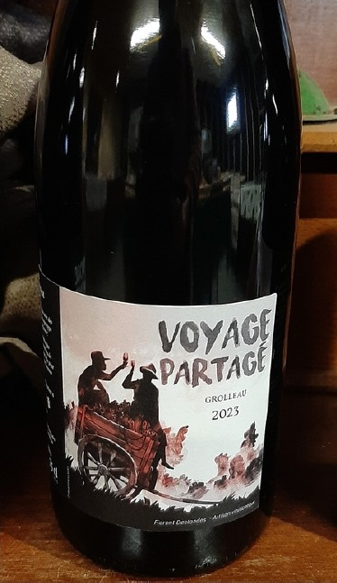

Rouge légerVoyage partagé
2023100 % Grolleau
Des arômes de fraise et de framboise, accompagnés de notes épicées.
Origine, vinification & détails
- Origine
- Anjou · Raisins bio · Vignes de 50 ans.
- Vinification
- Macération de 9 jours. Pressurage au pressoir en bois vertical, élevage naturel en cuve et mise en bouteille par gravité.
- Accords & service
- À servir frais à l’apéritif ou avec des viandes blanches.
9 €Tarif particulier